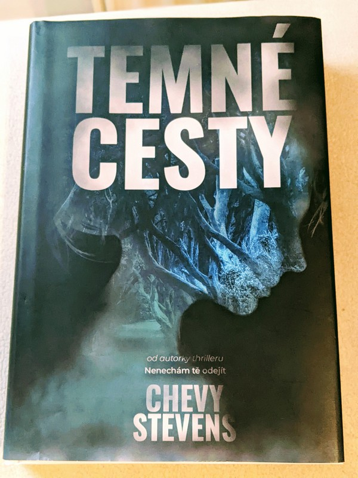

Po delší době tu mám opět něco ze žánru napínavých thrillerů. Jméno Chevy Stevens se tu na blogu neobjevuje prvně - někteří si možná vzpomenout na mou starší recenzi ke knize Nenechám tě odejít, kterou mě dosud neznámá autorka příjemně překvapila. Přestože tento žánr moc často nevyhledávám, když přišla nabídka na recenzi další knihy od této spisovatelky, byla jsem zvědavá, zda Temné cesty nabídnou stejně mrazivý čtenářský zážitek…
Hlavní motiv knihy je inspirován skutečnou událostí, respektive silnicí v kanadské Britské Kolumbii, kde od 70. let docházelo k vraždám nebo zmizením žen a většina těchto případů zůstala dodnes nevyřešena. Už jen z toho samotného faktu člověku docela běhá mráz po zádech. Hlavní hrdinkou románu je svérázná teenagerka Hailey, který po smrti svých rodičů žije u příbuzných v Cold Creek a je pod neustálou šikanou svého strýce, místního policisty Vaughna. Postupně se situace vyhrotí natolik, že se Hailey rozhodne utéct do kanadské divočiny, kde hodlá nějakou dobu žít - mezi lidmi ale vzbudí dojem, že se stala novou obětí silničního vraha.
Druhá dějová linie sleduje příběh Beth, jejíž sestra byla v Cold Creek skutečně zavražděna. Beth se vydává do městečka, aby vypátrala sestřina vraha. Při tom se setkává s Hailey a jejich cesty a osudy se postupně proplétají, až vyústí v napínavé finále, během něhož jde oběma dívkám o život.
Temné cesty mi na rozdíl od Nenechám tě odejít připadaly spíš jako čtení pro teenagery. Charakterizovala bych je jako “jednodušší” a méně propracované - byť mrazivé byly obě knihy srovnatelně. Román vás svým napínavým dějem rozhodně strhne a donutí k přemítání, kdo je pravým pachatelem všech těch vražd. Body dolů ovšem dávám za to, že ten příběh prostě nebyl úplně uvěřitelný. Postavy místy jednaly dost nelogicky a nepravděpodobně a navíc mi ani jedna z nich nebyla nijak zvlášť sympatická. Obzvlášť Beth a její nulový smysl pro zodpovědnost mě doslova vytáčel :-D

Myslím, že Chevy Stevens má bezpochyby talent pro vystavění napínavé zápletky, jen to zpracování mě v tomto případě nepřesvědčilo úplně na 100%, jako tomu bylo v případě knihy Nenechám tě odejít. Temné cesty jsou pro mě sice čtivým, ale stále jen lehce nadprůměrným thrillerem, který si asi klidně můžete nechat ujít.